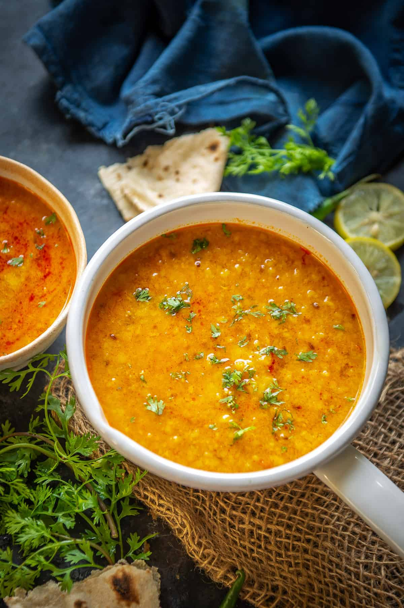

Dal

Description
This is a recipe for dal, a lentil dish from South Asia. It is simple to make yet quite flavorful.
Ingredients
- 2 cups split red lentils
- Half a sliced onion
- As much chopped garlic as you would like
- 2 cups water
- Spices
Steps
- Soak 2 cups of lentils in 2 cups of water overnight
- Chop half an onion
- Chop up some garlic
- Sautee onions and garlic
- Add soaked lentils and water to pot
- Add spices
- Simmer until soft
- Enjoy!